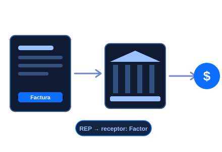
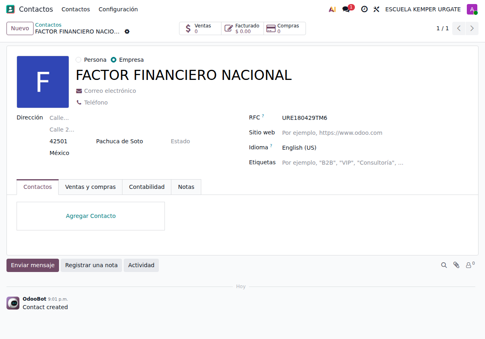
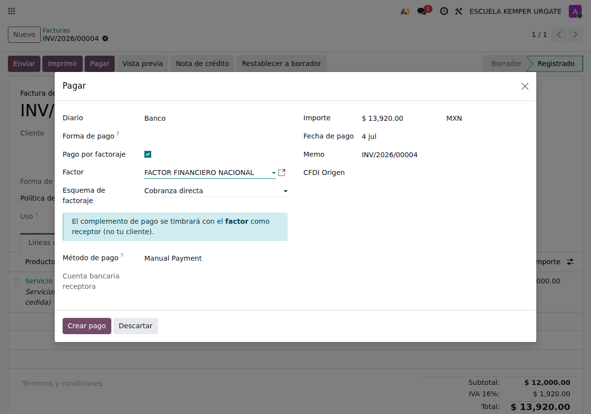
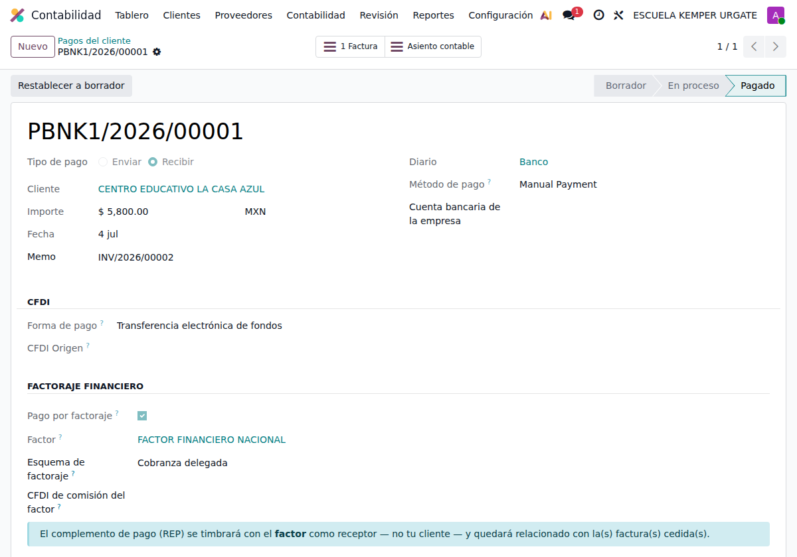
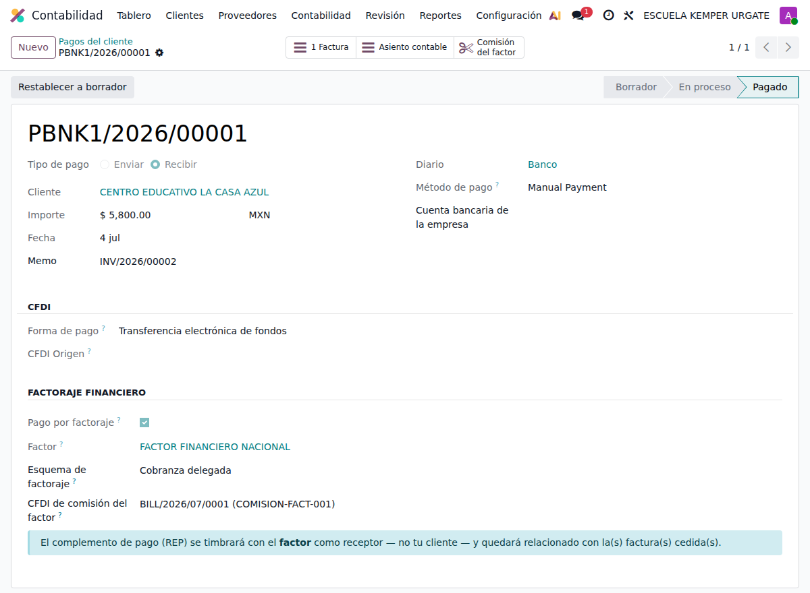

Cediste tus facturas a una entidad de factoraje y esa entidad te paga. El SAT exige que el complemento para recepción de pagos (REP) se emita con el factor como receptor, no con tu cliente. Este módulo lo hace sobre el CFDI nativo de Odoo (l10n_mx_edi).

El CFDI de pagos nativo de Odoo siempre pone como receptor al cliente de la factura. Pero en una operación de factoraje financiero quien te paga (y a quien debe ir dirigido el REP) es la entidad de factoraje. Este addon te deja marcar el pago como factoraje y timbrar el complemento con el factor como receptor, relacionado con la factura cedida — tal como lo exige la Guía de llenado del SAT.
El REP se timbra con el factor como receptor (su RFC, régimen y domicilio fiscal), no con el deudor de la factura.
Trabaja sobre l10n_mx_edi de Odoo. Registras el pago como siempre; solo activas una casilla y eliges al factor. No cambia tu flujo ni tu PAC.
Cobranza directa, cobranza delegada y plataforma electrónica. La emisión del CFDI es la misma; el esquema queda registrado para tu trazabilidad.
Si al factor le falta RFC, régimen o código postal, el módulo no timbra y te avisa con un mensaje claro, en vez de generar un CFDI inválido.
Hereda todo lo del REP nativo: pagos parciales, multimoneda, relación con la factura y cancelación. Solo cambia el receptor.
Enlaza el CFDI de comisión que te emite el factor para cerrar el ciclo completo: factura cedida → REP → comisión.
Según el SAT existen tres esquemas. En los tres, tú (el cedente) emites el REP con el factor como receptor; lo único que cambia es quién le cobra físicamente al deudor. El detalle completo está en el Manual de usuario.
| Esquema | Quién cobra al deudor |
| Cobranza directa | El factor cobra directamente al deudor al vencimiento. |
| Cobranza delegada | Tú (el cedente) cobras al deudor y transfieres los fondos al factor. |
| Plataforma electrónica | La cesión y el pago se operan a través de una plataforma electrónica de factoraje. |
¿Quieres ver cómo se usa, pantalla por pantalla? Abre la pestaña Manual de usuario arriba.
Requiere Odoo Enterprise con la localización mexicana de facturación electrónica (l10n_mx_edi) instalada y tu PAC configurado. El factoraje se timbra con el mismo PAC y certificado (CSD) que usas para tus facturas; no necesitas nada extra. Licencia OPL-1.
1. Qué hace y conceptos clave
2. Requisitos e instalación
3. Los tres esquemas de factoraje (detallado)
4. Paso 1: el factor como contacto
5. Paso 2: registrar el pago con factoraje
6. Paso 3: timbrar el REP (receptor = factor)
7. Paso 4: la comisión del factor
8. Preguntas frecuentes
Cuando vendes (cedes) una factura a una entidad de factoraje, esa entidad te paga un anticipo. El SAT establece que quien recibe el pago emite el REP: como el factor te paga a ti, tú emites el complemento de pago con el factor como receptor (no con el cliente original de la factura), relacionado con el CFDI de la operación. Este módulo hace exactamente eso sobre el CFDI nativo de Odoo.
| Factorado / cedente | Tú: quien emitió la factura original y cede su cobro al factor. |
| Factor / factorante | La entidad de factoraje que te compra la factura y te paga. |
| Deudor | El cliente original de la factura cedida. |
| REP | Complemento para recepción de pagos (CFDI de tipo Pago). Aquí se emite con el factor como receptor. |
| CFDI de comisión | Factura que el factor te emite por su comisión e intereses. Va aparte (no dentro del REP). |
Necesitas Odoo Enterprise con l10n_mx_edi (localización mexicana de facturación) y tu PAC ya configurado. Entra a Aplicaciones, busca Factoraje financiero CFDI e instala. No agrega menús nuevos: el factoraje aparece dentro del registro de pagos y en la ficha del pago.
El módulo se apoya en el timbrado nativo de l10n_mx_edi: usa el mismo certificado (CSD) y PAC de tus facturas. No requiere configuración adicional.
La Guía de llenado del complemento de pagos del SAT describe tres esquemas de factoraje. Lo esencial: en los tres, la emisión del CFDI es idéntica — tú (cedente) emites el REP con el factor como receptor. Lo único que cambia es la operación de cobranza al deudor. En el módulo eliges el esquema solo para dejarlo registrado; no altera el XML.
Cedes la factura al factor y recibes tu anticipo. Cuando llega el vencimiento, el factor cobra directamente al deudor. Tú ya no intervienes en ese cobro. Es el esquema más común: el deudor termina pagando a la entidad de factoraje.
También cedes la factura y recibes el anticipo, pero la cobranza la sigues haciendo tú: el deudor te paga a ti y ese mismo día transfieres los fondos al factor. El factor te “delega” la cobranza. Para el deudor no cambia nada; para ti implica un paso extra de traspaso al factor.
La operación de factoraje se realiza a través de una plataforma electrónica (por ejemplo, mercados de factoraje o cadenas productivas), donde la cesión de los derechos de cobro y la dispersión de los pagos se gestionan de forma digital entre proveedor, factor y deudor.
En la práctica, para tu contabilidad: elige el esquema que corresponda a tu contrato en el campo Esquema de factoraje del pago. El REP saldrá igual en los tres (receptor = factor); el campo queda como referencia y trazabilidad de la operación.
El factor debe existir como contacto con sus datos fiscales completos, porque será el receptor del CFDI. En Contactos, crea (o edita) la entidad de factoraje y captura:

Si falta alguno de estos datos, el módulo te avisará al intentar timbrar y no generará un CFDI inválido.
Cuando el factor te paga, registra ese pago sobre la factura cedida como lo haces normalmente. Abre la factura y pulsa Pagar. En el asistente verás la sección de factoraje:
Al activarlo aparece un aviso confirmando que el complemento de pago se timbrará con el factor como receptor, no con tu cliente. Pulsa Crear pago.

El pago creado muestra la sección Factoraje financiero con el factor, el esquema y el aviso del receptor. Al generar el complemento de pago (igual que un REP normal), el CFDI se timbra con el factor como receptor — con su RFC, nombre y régimen — y queda relacionado con la factura cedida.

Todo lo demás del REP (montos, parcialidad, moneda, documento relacionado) lo calcula el CFDI nativo de Odoo; el módulo solo sustituye el receptor por el factor.
El factor te emite por separado un CFDI de Ingreso por su comisión e intereses (el SAT lo documenta fuera del REP). El flujo es:
Así queda completo el ciclo: factura cedida → REP (receptor = factor) → comisión, todo enlazado desde el pago.

¿Cambia mi forma de facturar?
No. Facturas y timbras igual; el factoraje solo aparece al registrar el pago que te hace el factor.
¿La comisión del factor va dentro del REP?
No. El SAT la documenta con un CFDI de Ingreso aparte que el factor te emite; tú lo registras como gasto y lo enlazas al pago.
¿Sirve para pagos parciales o en otra moneda?
Sí. El módulo hereda el complemento de pagos nativo; parcialidades, multimoneda y cancelación funcionan igual. Solo cambia el receptor.
¿Necesito Enterprise?
Sí. Se apoya en l10n_mx_edi (Enterprise). Usa tu mismo PAC y certificado.
¿Qué pasa si al factor le faltan datos fiscales?
El módulo no timbra y te muestra qué dato falta (RFC, régimen o código postal), para que lo completes antes.
Puesta en marcha de Odoo a la medida de tu operación, de la configuración al arranque.
Módulos y personalizaciones específicas para automatizar lo que tu negocio necesita.
Configuración fiscal y contable alineada a la normativa mexicana (CFDI, SAT y conciliación).
Formamos a tu equipo para que aproveche Odoo al máximo desde el primer día.
Implementación, desarrollo y consultoría Odoo en México.